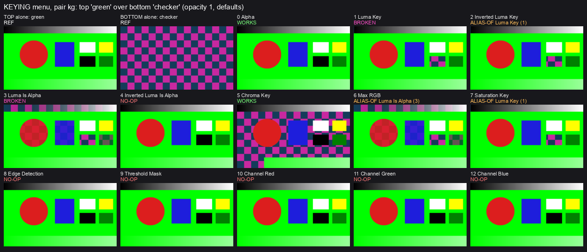
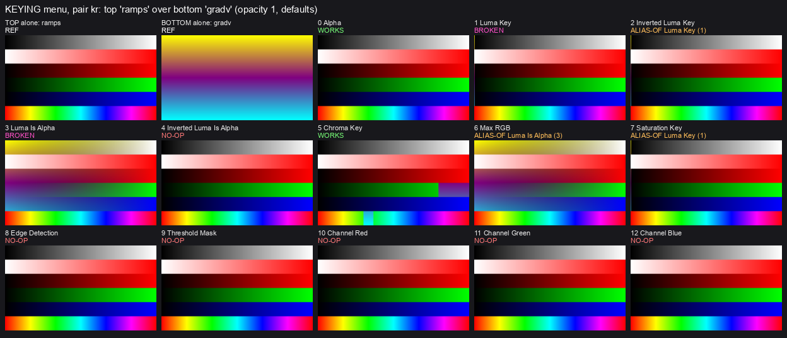
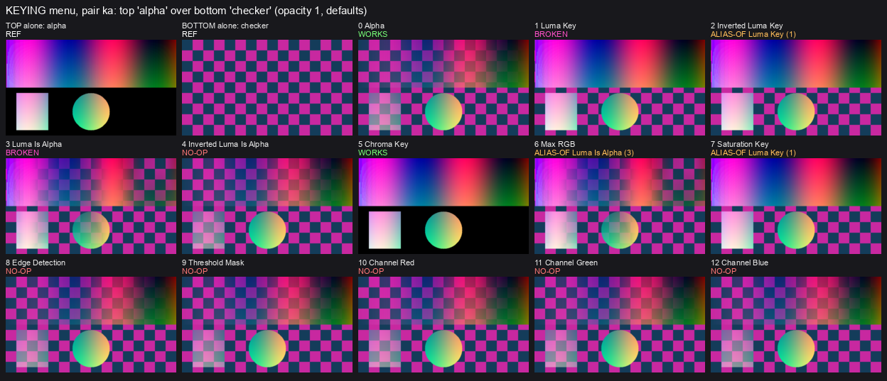
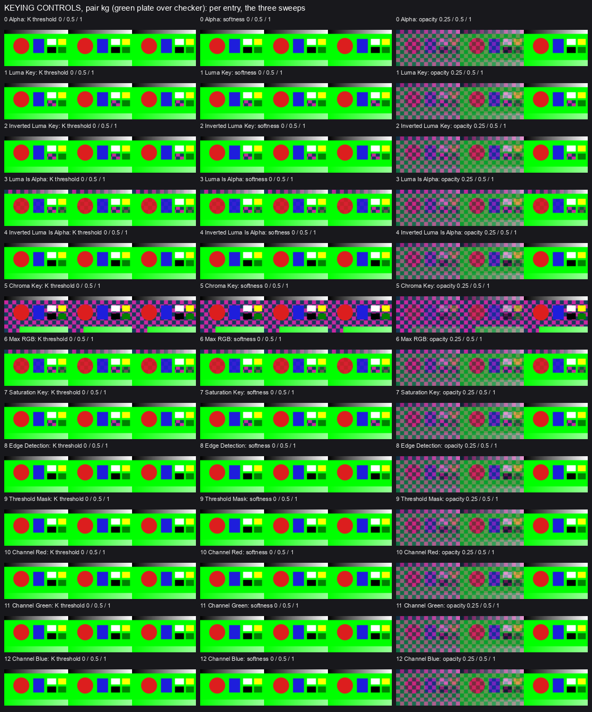
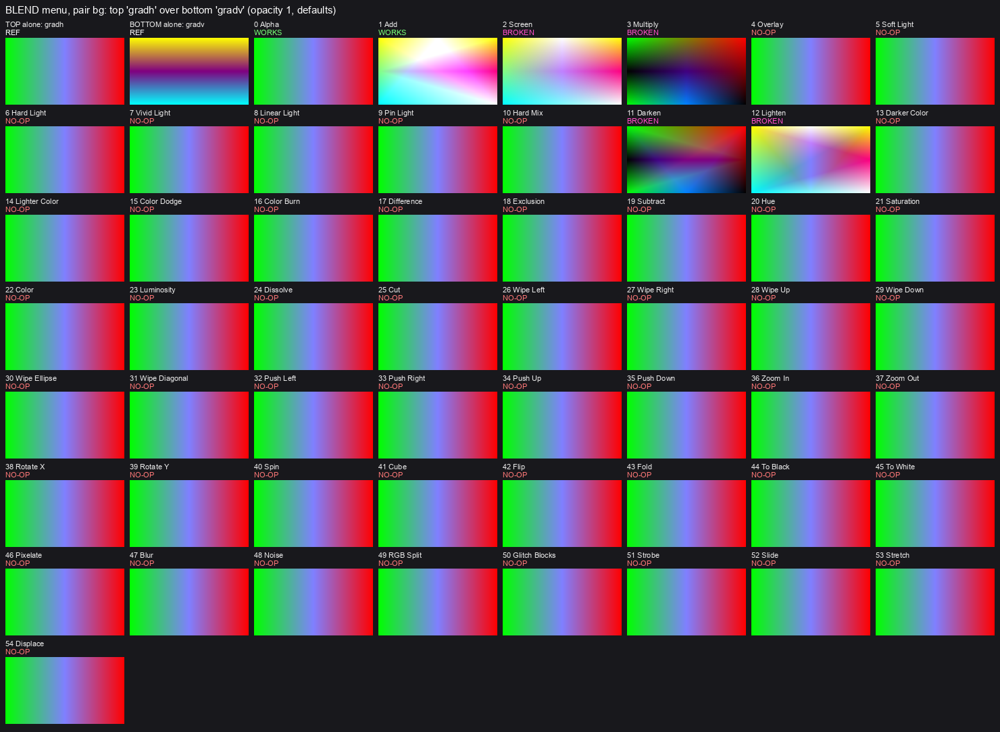
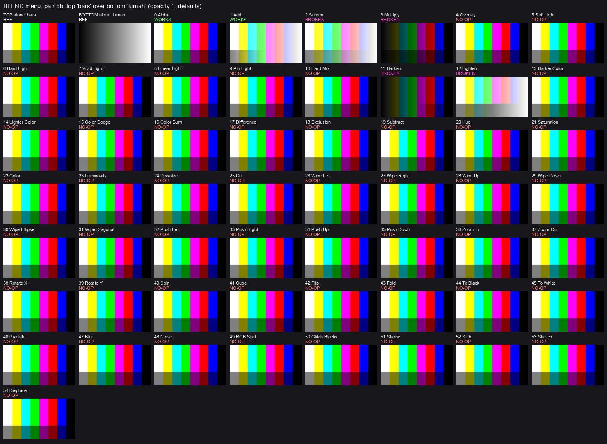
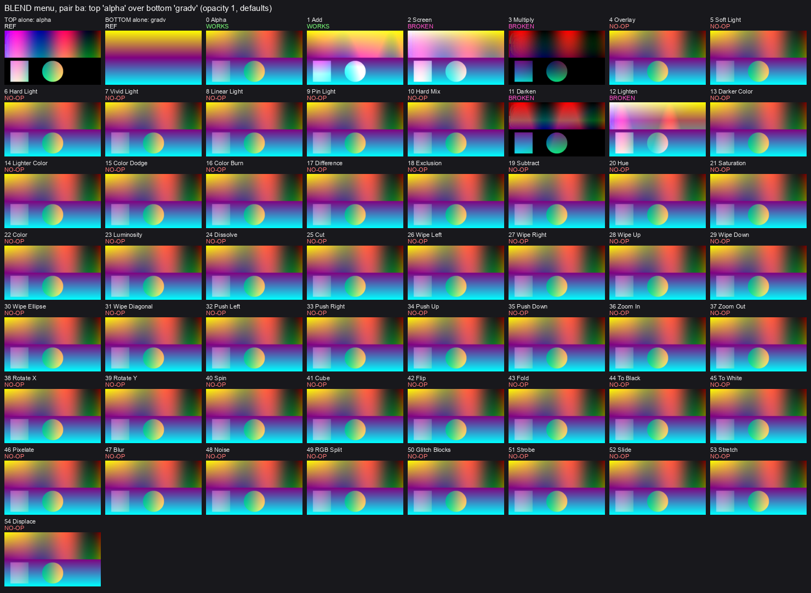
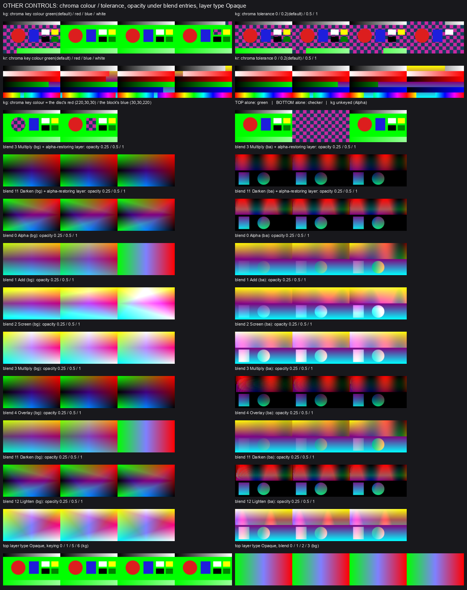
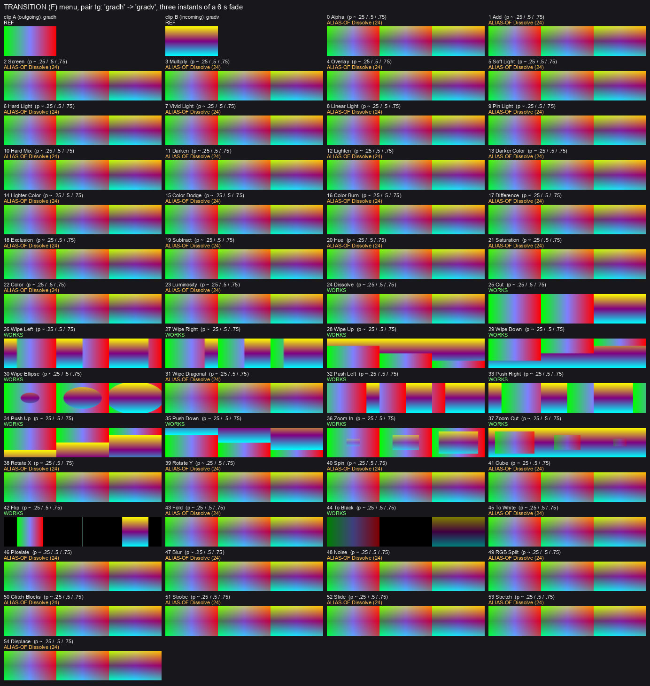
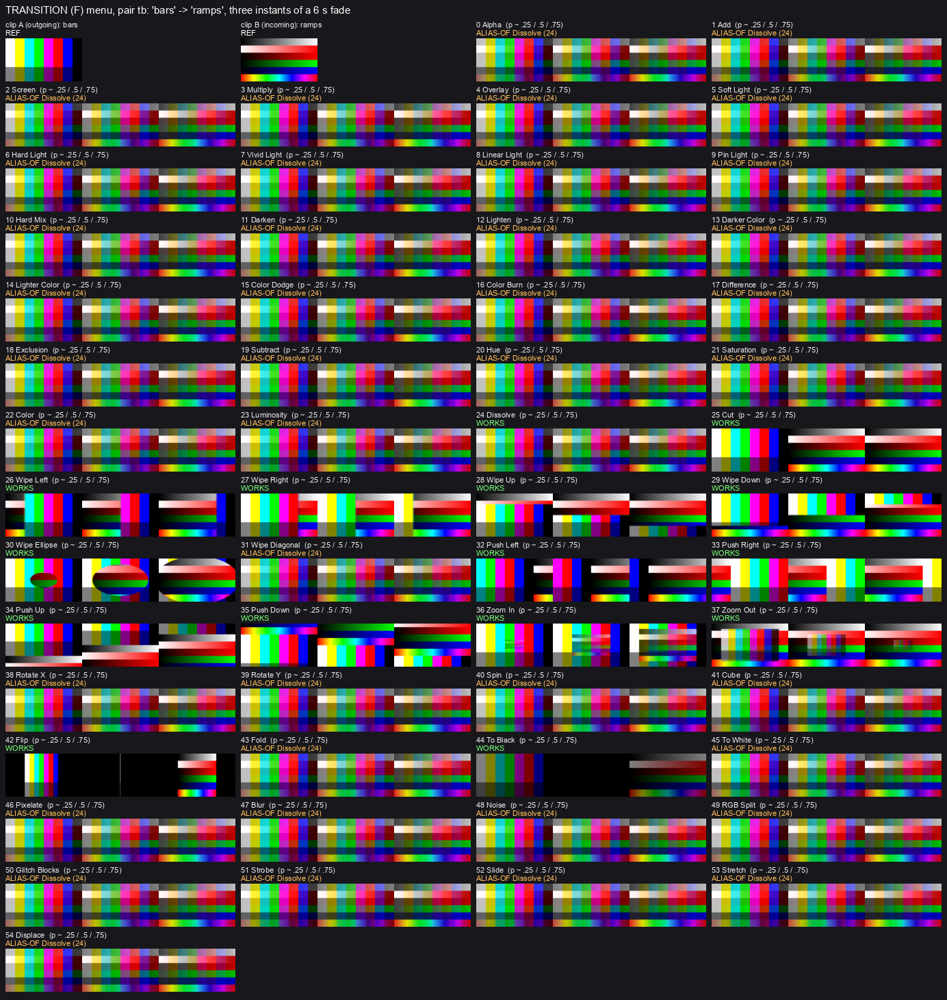

I put every entry of the Keying menu (13), the layer Blend menu (55) and the Transition menu (55) into the real Audio-DNA app, one at a time, and compared the finished pictures number by number. Nothing in the app was changed. Of the 123 entries, 20 do what their name says, 43 draw exactly the same picture as another entry, 55 do nothing at all, and 5 are wrong in some way. The Keying slider changed not one pixel under any of the 13 keying entries.
Every entry below has a proposal: Keep, Fix or Remove. Nothing is built until you answer, and every Remove is only a proposal.
You wrote:
Can you figure out how to get everything working in the keying menu? Does the keying slider actually do anything? Maybe we get rid of it. Some elements in the keying menu work and some don’t. Should we use the transparency slider to do the work for keying elements? Also review the compositing menu, right slider in layer strip. These elements don’t work: Creative, 3D,
How I chose. Works: Keep. A duplicate, or an entry that does nothing: Remove, unless the cause (read from the code, not tried) looks like a small, obvious fix: then Fix, marked “likely small fix”. The four blends that ignore opacity and transparency: Fix, but whether that is a defect is your call.
Words used. Works: draws what its name says. Same picture as X: draws exactly what X draws, so it is a duplicate. Does nothing: the picture comes out as the plain one. Wrong: it does something, but not what its name says, or only in some cases.
| Menu | Keep | Fix | Remove | Total |
|---|---|---|---|---|
| Keying | 3 | 2 | 8 | 13 |
| Layer Blend | 2 | 4 | 49 | 55 |
| Transitions | 15 | 0 | 40 | 55 |
| All | 20 | 6 | 97 | 123 |
| Entry | What it does today | Proposal | Why |
|---|---|---|---|
| Alpha | Works. Keeps the picture as it is, including its own see-through areas. | Keep | Right as it is. |
| Luma Key | Wrong. Removes only pure black and nothing else (measured on this Mac). The Keying slider, Threshold and Softness do not move it. | Fix | Likely small fix. Its program likely looks for the cut point and the softness under different names than the app sends, so both stay at zero. Cause read from the code; not tried. |
| Inverted Luma Key | Same picture as Luma Key. Removes only pure black; nothing is inverted. | Fix | Likely small fix, but only after Luma Key’s: it likely runs Luma Key’s program with nothing flipping the result. |
| Luma Is Alpha | Same picture as Max RGB. It fades by the brightest color of each spot, not by brightness as its name says. | Remove | The duplicate of Max RGB. A true brightness version would be new work; the code reading shows no small fix. |
| Inverted Luma Is Alpha | Does nothing. The picture comes out untouched, as with Alpha. | Remove | Likely has nothing of its own behind it (the code hands it Alpha’s). A real one would be new work. |
| Chroma Key | Works (measured on this Mac). Removes green only: the green is fixed and the edge is hard. | Keep | Does what its name says. Its color and tolerance do work when set in a show file; the code likely has no on-screen control for them (not tried by hand). |
| Max RGB | Works. Dark parts become see-through, bright parts stay solid. | Keep | Its own recipe fits the picture. It is the original; Luma Is Alpha is the copy (Harmony’s ruling). |
| Saturation Key | Same picture as Luma Key. Removes only pure black; it does not look at color strength. | Remove | Likely borrows Luma Key’s program. A real saturation key would be new work. |
| Edge Detection | Does nothing. The picture comes out untouched, as with Alpha. | Remove | Likely has no edge finding behind it, only Alpha’s program. A real one would be new work. |
| Threshold Mask | Does nothing. The picture comes out untouched. | Remove | Likely has only Alpha’s program behind it. A real one would be new work. |
| Channel Red | Does nothing. The picture comes out untouched. | Remove | Likely has only Alpha’s program behind it. A real one would be new work. |
| Channel Green | Does nothing. The picture comes out untouched. | Remove | Likely has only Alpha’s program behind it. A real one would be new work. |
| Channel Blue | Does nothing. The picture comes out untouched. | Remove | Likely has only Alpha’s program behind it. A real one would be new work. |
Count check, Keying: 3 Keep (Alpha, Chroma Key, Max RGB) + 2 Fix (Luma Key, Inverted Luma Key) + 8 Remove (Luma Is Alpha, Inverted Luma Is Alpha, Saturation Key, Edge Detection, Threshold Mask, Channel Red, Channel Green, Channel Blue) = 13.
Two more things measured. Luma Key, Chroma Key and Max RGB all ignore a picture’s own see-through areas (see the third keying sheet). Keying and Blend act only on a layer set to “Transparent”: on an “Opaque” layer every entry gave the plain picture (tried with all 13 keying entries and 4 blend entries). The code likely has no on-screen control for that setting; I did not check by hand.
| Control | What it does today | Proposal | Why |
|---|---|---|---|
| Keying slider (K, layer strip), Threshold and Softness (layer inspector) | Does nothing in any of the 13 entries. | Fix | The three stand or fall together. Likely cause: no keying entry is wired to these values (Luma Key looks for them under other names). Wired to Luma Key, they would likely set where it cuts and how soft its edge is. Nothing else in the menu has anything for them to control. If you would rather not fix Luma Key, my proposal becomes Remove for all three. |
| Opacity (“transparency”) slider | Works under all 13 entries, as a fade of the whole layer. | Keep | My suggestion is to leave it as the fade and not use it as the key amount (see question 3). |
| F slider (fade time) | Works. | Keep | Measured at 2, 4 and 8 seconds. Please confirm it is the right-hand slider you meant. |
“Plain picture” means the same as Alpha: the layer simply lies over the ones below. 18 of the 49 “Does nothing” entries are real photo-editing blend names (Overlay, the Light group, Darker/Lighter Color, Dodge/Burn, Inversion, Component). The other 31 (from Special down) are transition names.
| Entry | What it does today | Proposal | Why |
|---|---|---|---|
| Compositing (5) | |||
| Alpha | Works. The layer lies over the ones below, honoring its own see-through areas and the opacity slider. | Keep | Right as it is. |
| Add | Works. Adds the layer’s colors to what is below; the opacity slider fades it. | Keep | Right as it is. |
| Screen | Wrong. Right only for a solid picture at full opacity. The opacity slider does nothing here (three settings gave identical pictures), and a see-through picture shows its color at full strength where it should fade. | Fix | Your call whether this is a defect. If you want it to behave this way, it becomes Keep. |
| Multiply | Wrong. Right only for a solid picture at full opacity. The opacity slider does nothing to the color, and wherever the picture is see-through the result turns black. | Fix | Your call whether this is a defect. If you want it to behave this way, it becomes Keep. |
| Overlay | Does nothing. Plain picture. | Remove | No Overlay recipe exists (the code likely sends it to the plain picture). A real one would be new work, and it is a look you may miss. |
| Light (6) | |||
| Soft Light, Hard Light, Vivid Light, Linear Light, Pin Light, Hard Mix | Does nothing (all six). Plain picture. | Remove | No recipe of its own (likely sent to the plain picture). Real ones would be new work. |
| Compare (4) | |||
| Darken | Wrong. Right only for a solid picture at full opacity. The opacity slider does nothing to the color, and wherever the picture is see-through the result turns black. | Fix | Your call whether this is a defect. If you want it to behave this way, it becomes Keep. |
| Lighten | Wrong. Right only for a solid picture at full opacity. The opacity slider does nothing here, and a see-through picture shows its color at full strength where it should fade. | Fix | Your call whether this is a defect. If you want it to behave this way, it becomes Keep. |
| Darker Color, Lighter Color | Does nothing (both). Plain picture. | Remove | No recipe of its own (likely sent to the plain picture). Real ones would be new work. |
| Dodge / Burn (2) | |||
| Color Dodge, Color Burn | Does nothing (both). Plain picture. | Remove | No recipe of its own (likely sent to the plain picture). Real ones would be new work. |
| Inversion (3) | |||
| Difference, Exclusion, Subtract | Does nothing (all three). Plain picture. | Remove | No recipe of its own (likely sent to the plain picture). Real ones would be new work; Difference is a look you may miss. |
| Component (4) | |||
| Hue, Saturation, Color, Luminosity | Does nothing (all four). Plain picture. | Remove | No recipe of its own (likely sent to the plain picture). Real ones would be new work. |
| Special (2) | |||
| Dissolve, Cut | Does nothing (both). Plain picture. | Remove | Transition names, not blends. Both work in the Transition menu. |
| Wipe (6) | |||
| Wipe Left, Wipe Right, Wipe Up, Wipe Down, Wipe Ellipse, Wipe Diagonal | Does nothing (all six). Plain picture. | Remove | Transition names, not blends. Five of the six work in the Transition menu (not Wipe Diagonal). |
| Push (4) | |||
| Push Left, Push Right, Push Up, Push Down | Does nothing (all four). Plain picture. | Remove | Transition names, not blends. All four work in the Transition menu. |
| Zoom (2) | |||
| Zoom In, Zoom Out | Does nothing (both). Plain picture. | Remove | Transition names, not blends. Both work in the Transition menu. |
| 3D (6) | |||
| Rotate X, Rotate Y, Spin, Cube, Flip, Fold | Does nothing (all six). Plain picture. | Remove | Transition names, not blends. Only Flip works in the Transition menu. |
| Color Fade (2) | |||
| To Black, To White | Does nothing (both). Plain picture. | Remove | Transition names, not blends. To Black works in the Transition menu; To White does not. |
| Creative (9) | |||
| Pixelate, Blur, Noise, RGB Split, Glitch Blocks, Strobe, Slide, Stretch, Displace | Does nothing (all nine). Plain picture. | Remove | Transition names, not blends. None of them works in the Transition menu either. |
Count check, Layer Blend: 2 Keep (Alpha, Add) + 4 Fix (Screen, Multiply, Darken, Lighten) + 49 Remove (Overlay 1, Light 6, Darker Color and Lighter Color 2, Dodge/Burn 2, Inversion 3, Component 4, Special 2, Wipe 6, Push 4, Zoom 2, 3D 6, Color Fade 2, Creative 9) = 55.
A moment in the middle of a fade cannot be frozen, so each transition was measured on a slow 6-second fade at three moments, and the fade’s position was checked against the clock (always within one percent). “Works” here means the picture matches that entry’s own recipe. Whether a direction matches the word you expect (for example Wipe Up) is for you to judge on the transition sheets.
| Entry | What it does today | Proposal | Why |
|---|---|---|---|
| Compositing (5) | |||
| Alpha, Add, Screen, Multiply, Overlay | Same picture as Dissolve (all five). | Remove | Blend names, not transitions. They likely have no transition of their own and fall back to Dissolve. |
| Light (6) | |||
| Soft Light, Hard Light, Vivid Light, Linear Light, Pin Light, Hard Mix | Same picture as Dissolve (all six). | Remove | Blend names, not transitions. Likely fall back to Dissolve. |
| Compare (4) | |||
| Darken, Lighten, Darker Color, Lighter Color | Same picture as Dissolve (all four). | Remove | Blend names, not transitions. Likely fall back to Dissolve. |
| Dodge / Burn (2) | |||
| Color Dodge, Color Burn | Same picture as Dissolve (both). | Remove | Blend names, not transitions. Likely fall back to Dissolve. |
| Inversion (3) | |||
| Difference, Exclusion, Subtract | Same picture as Dissolve (all three). | Remove | Blend names, not transitions. Likely fall back to Dissolve. |
| Component (4) | |||
| Hue, Saturation, Color, Luminosity | Same picture as Dissolve (all four). | Remove | Blend names, not transitions. Likely fall back to Dissolve. |
| Special (2) | |||
| Dissolve | Works. A soft cross-fade from the old clip to the new one. It is also what 40 other entries draw. | Keep | Right as it is. |
| Cut | Works as built. It is not instant: it holds the old clip for the first half of the fade time, then jumps to the new one. | Keep | Matches its own recipe. If you want Cut to be instant, say so. |
| Wipe (6) | |||
| Wipe Left, Wipe Right, Wipe Up, Wipe Down | Work. The new clip comes in from the left edge (Left), the right edge (Right), the top edge going down (Up), the bottom edge going up (Down). | Keep | Match their own recipes. |
| Wipe Ellipse | Works. An ellipse opens from the centre and shows the new clip. | Keep | Right as it is. |
| Wipe Diagonal | Same picture as Dissolve. | Remove | Likely has no transition of its own. A diagonal wipe would be new work, though four straight wipes already work. |
| Push (4) | |||
| Push Left, Push Right, Push Up, Push Down | Work. The old clip slides out in the named direction and the new one follows right behind it. | Keep | Match their own recipes. |
| Zoom (2) | |||
| Zoom In | Works. The new clip grows from the centre. | Keep | Right as it is. |
| Zoom Out | Works. The old clip shrinks into the centre. | Keep | Right as it is. |
| 3D (6) | |||
| Rotate X, Rotate Y, Spin, Cube | Same picture as Dissolve (all four). | Remove | Likely no transition of its own. Real ones would be new work. |
| Flip | Works. The old clip squeezes to a thin line over black, then the new one opens. | Keep | Right as it is. |
| Fold | Same picture as Dissolve. | Remove | Likely no transition of its own. A real one would be new work. |
| Color Fade (2) | |||
| To Black | Works. Fades to black at the middle, then up to the new clip. | Keep | Right as it is. |
| To White | Same picture as Dissolve. | Remove | Likely no transition of its own. A white fade would be new work. |
| Creative (9) | |||
| Pixelate, Blur, Noise, RGB Split, Glitch Blocks, Strobe, Slide, Stretch, Displace | Same picture as Dissolve (all nine). | Remove | Likely no transition of its own. Real ones would be new work; the audit did not size it. |
Count check, Transitions: 15 Keep (Dissolve, Cut, 4 straight wipes, Wipe Ellipse, 4 pushes, Zoom In, Zoom Out, Flip, To Black) + 40 Remove (24 blend names, Wipe Diagonal, Rotate X, Rotate Y, Spin, Cube, Fold, To White, 9 Creative) = 55.
Click a sheet to see it full size. The small captions on the sheets are the audit’s own words (WORKS, NO-OP = does nothing, ALIAS-OF = same picture as, BROKEN = wrong). One caption is out of date: the keying sheets call Max RGB “same as Luma Is Alpha”, but the ruling is that Max RGB is the original that works and Luma Is Alpha is its copy.










Nothing is built until you answer. Every Remove is only a proposal. Answer per family: accept the proposals, or name the entries you want kept or fixed instead. For example: “Keying: accept. Blend: accept, but keep Overlay and Difference. Transitions: accept.” Your words are filed as you write them.